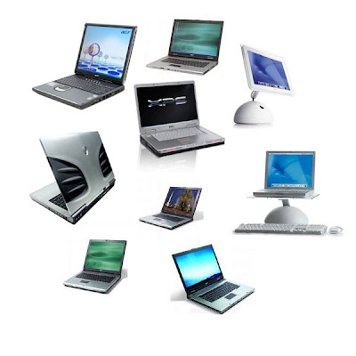
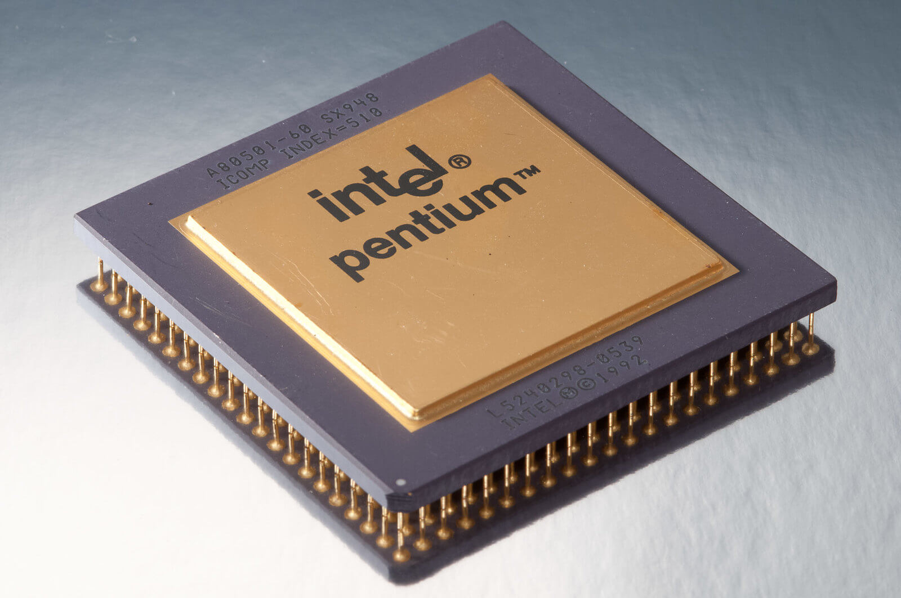
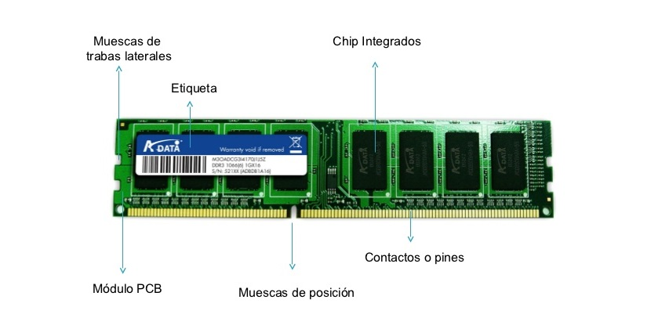
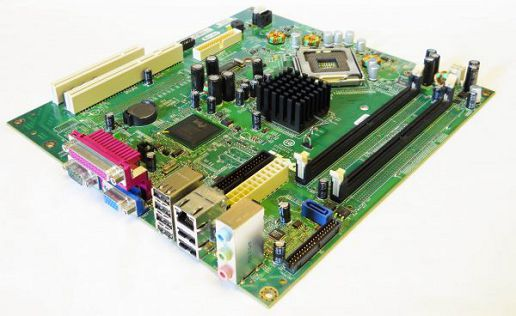
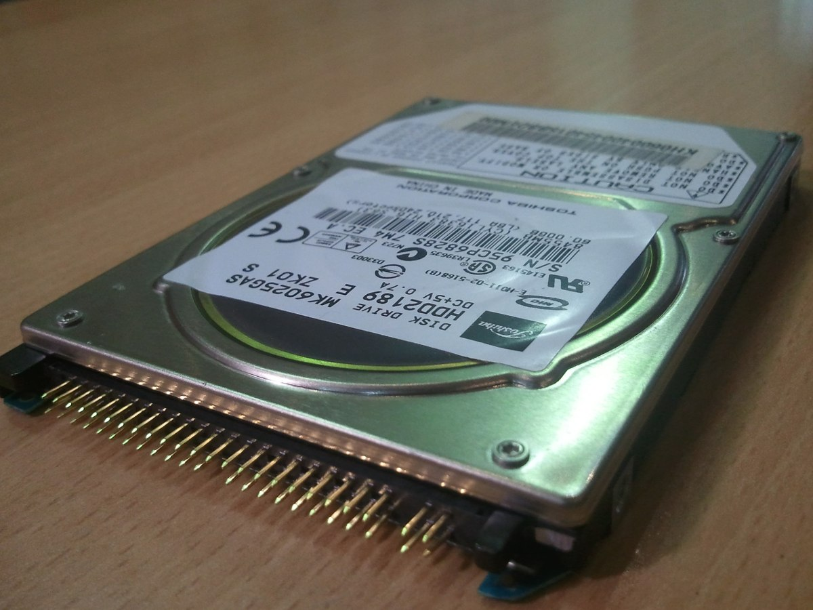
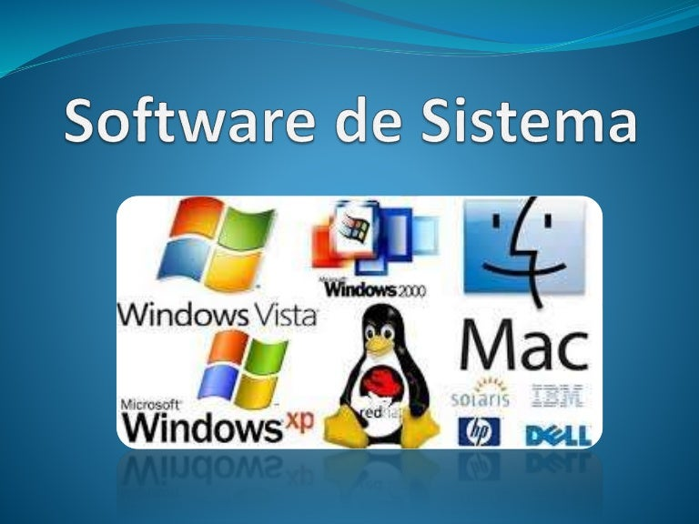
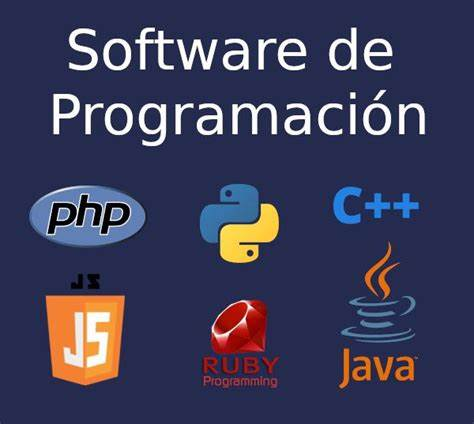
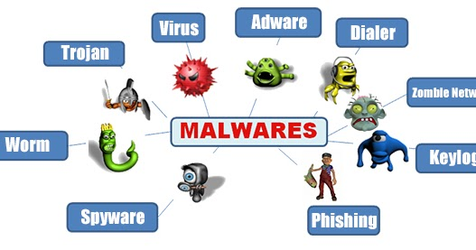

¿Qué es la computadora y cuáles son sus partes?
¿Qué es la Computadora?
Una computadora es un dispositivo informtico que es capaz de recibir, almacenar y procesar..

La enorme cantidad de componentes de una computadora pueden agruparse en dos categorías separadas, que son:
- Hardware:
La parte física y tangible del sistema, o sea, sus componentes
- Software:
La parte intangible, digital, abstracta, del sistema.
Hardware
Un hardware está compuesto por todas las partes físicas que componen un ordenador, aquellas que se pueden tocar en primera instancia.
- Procesador:
El procesador es el que se refiere a los diferentes tipos de artculos de sistemas informativos que forma parte de un microprocesador que es parte de un CPU o micro que es el cerebro de la computadora y de todos los procesos informativos desde los ms sencillos hasta los ms complejos.

- Memoria RAM:
Es el lugar adonde van a ejecutarse y a permanecer activos los diversos programas, desde el propio sistema operativohasta las aplicaciones que utilicemos.

- Tarjeta Madre:
La tarjeta madre, placa base o motherboard es una tarjeta de circuito impreso que permite la integración de todos los componentes de una computadora. Para esto, cuenta con un software básico conocido como BIOS, que le permite cumplir con sus funciones.

- Disco Duro:
Los discos duros son dispositivos de almacenamiento de datos en los que podemos almacenar cualquier tipo de información digital.

Software
El software es un conjunto de programas y datos que permiten que una computadora pueda realizar sus tareas y controlar los dispositivos físicos o hardware
- Software de Aplicación:
Un software de aplicación es un programa creado para ayudar al usuario a ejecutar tareas específicas.

- Software de sistemas:
El software de sistema es, en términos simples, el que nos permite interactuar con un dispositivo por medio de su hardware.

- Software de programación:
Un software de programación es un tipo especial de software que nos permite crear/desarrollar/programar otras aplicaciones. Los software de programación son los que dan origen a los programas que utilizamos día a día.

- Software Malicioso:
El software malicioso, también conocido como malware, puede entrar en el equipo y realizar acciones sin su permiso, lo que da a los hackers acceso total a sus datos, dispositivos y sistemas. Podrías compararlo con un resfriado común.
